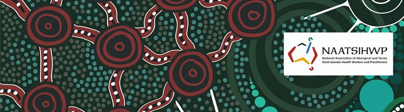

Original Blackboard item · _7400147_1
NAATSIHWP - National Association of Aboriginal and Torres Strait Islander Health Workers and Practitioners: Closing the Gap in health outcomes for Aboriginal and Torres Strait Islander Australians

Aboriginal and Torres Strait Islander Health Workers are critical to improving the health and wellbeing of their peoples. They bring unique cultural skills and play a vital role that spans clinical intervention, health promotion, and community outreach and liaison. Aboriginal Health Workers (AHWs) often work at the frontline of PHC and HP activities and services.
A video about a Primary Health Care nurse working in an Aboriginal Community Controlled Health Organisation (ACCHO). Sandra describes the community and social benefits of working alongside Aboriginal Health Workers, who are the holders of the cultural knowledge that guides the clinical care for Aboriginal and Torres Strait Islander clients.
[9.48] I think it's important that you are [11.08] interested in the community. The place [13.40] is built on people being social and [15.68] engaging and you get a lot of respect [17.88] about what you do. There's people to [19.92] laugh and debrief with. It's a really [21.92] fun warm place. My name's Sandra [24.48] Gregson. I'm a nurse that works in a [27.08] Aboriginal Medical Service and my [29.12] specific role is sexual health and blood [31.52] borne viruses. [35.80] I've been working here for just over 10 [38.12] years now. We do all stages of life [40.96] here. We do from pregnancy care to [44.12] palliative care. It's a very autonomous [46.32] job within a group setting. I most [48.88] closely work with the Aboriginal Health [51.12] Workers and they're a significant part [53.88] of the service. They hold a lot of the [55.80] cultural knowledge and so they guide the [59.04] clinical care and then the JPs and the [61.64] nurses provide the care with our skills. [64.32] Over time I've learnt different things [66.20] with experience but an Aboriginal Health [68.12] Worker just has a lot of that knowledge. [70.16] You often don't know what you don't know [72.28] and what I mean by that is that you can [74.20] make perceptions about things but you [76.20] don't know what you're missing. [78.44] We're extremely committed to holistic [80.64] care and that means to look at the [83.16] individual patient physically, mentally, [86.52] but also socially. You get to hear so [88.80] many different stories and I find that [91.16] really enjoyable and not just clinical.
[15.04] morning every client seen it which [16.80] operating here in the in the medical [18.40] clinic is seen initially by a health [20.80] worker [21.92] there you go and we call it screening [23.84] but it's much much more than that [26.08] which operators always believe that the [27.60] health workers are front and center to [29.28] health care they tend to be the first [31.60] person to speak to the client they're [33.52] also the first person that the clients [35.52] will turn to if there's some confusion [37.60] or they need further clarification and [39.44] so on and then in our model here they're [41.60] also the last person they speak to [43.36] because they're the people that are [44.48] organizing their follow-up and their [46.16] transport and their recalls [48.88] bruce would often accompany the client [50.72] for the first visit [52.32] bruce may come in for the second or [53.84] third visit but [55.68] usually then we've built a relationship [58.32] with the client and the client feels [60.32] quite comfortable [62.08] seeing me on their own [64.00] bruce's role as the aboriginal health [66.80] worker is really paramount because he [70.24] brings an understanding of cultural [72.88] safety and reflection into the whole uh [76.80] consult [78.56] when the last time you've been to see a [79.52] doctor [80.64] no brother i don't really go to the [82.32] doctor what we might do we'll go through [84.32] a um [85.44] a evident health check [87.68] and then um [89.04] we can screen you for that as well the [91.20] basis of what i did with the client was [92.88] just sort of a initial screening prior [95.20] to seeing the doctor we do that with [97.28] every client that walks through our door [99.20] we do a pre-consult basic obs [101.92] our history and [104.40] which makes the jobs a lot easier for [105.92] the doctor [108.32] good day david [109.84] got your next patient this is jodas [112.00] jonas [112.96] is david doctor done he's been here for [114.80] a number of years now so um [116.72] yeah he's gonna be your doctor today [118.88] yeah come on all right come and take a [120.32] second [127.12] see him through the process today from [129.44] the pre-consult to take him in to see [131.60] the doctor and jodas was a bit [134.24] um reluctant to see the doctor alone and [136.56] he felt more comfortable and sat with [138.88] him so [139.92] here we are [142.08] i think it's important to allow the [143.52] client to open up a lot more and get [145.76] some trust going with him myself and the [147.68] doctor [148.80] and um we can better treat his illnesses [150.64] then [151.60] i just enjoy my community [153.76] the results [155.20] follow up [156.48] and you see people get well [159.84] which is really rewarding [162.16] hi [163.12] i have an appointment at 11. [165.60] today molly came to see me and she came [168.64] in for our first antenatal chair [172.72] thank you [174.08] we look at the holistic health of that [176.40] person we just don't look at what they [179.36] present hi marlon [183.28] you know what's going to be done when [184.88] you're here like for your checkup [187.28] um no just to check on my belly so i'll [190.40] be um we're doing your screening today [193.36] before you see the doctor and we'll take [195.28] the blood to check you yourself and bub [197.84] as well [200.24] our health workers while they do have [201.92] the clinical role because of their [203.36] experience and their skills they also [205.76] are able to balance that with their [208.08] knowledge from a cultural point of view [210.56] around the community and around [212.40] being indigenous people themselves [237.60] you